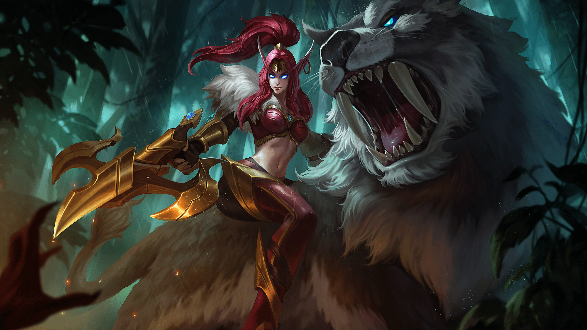
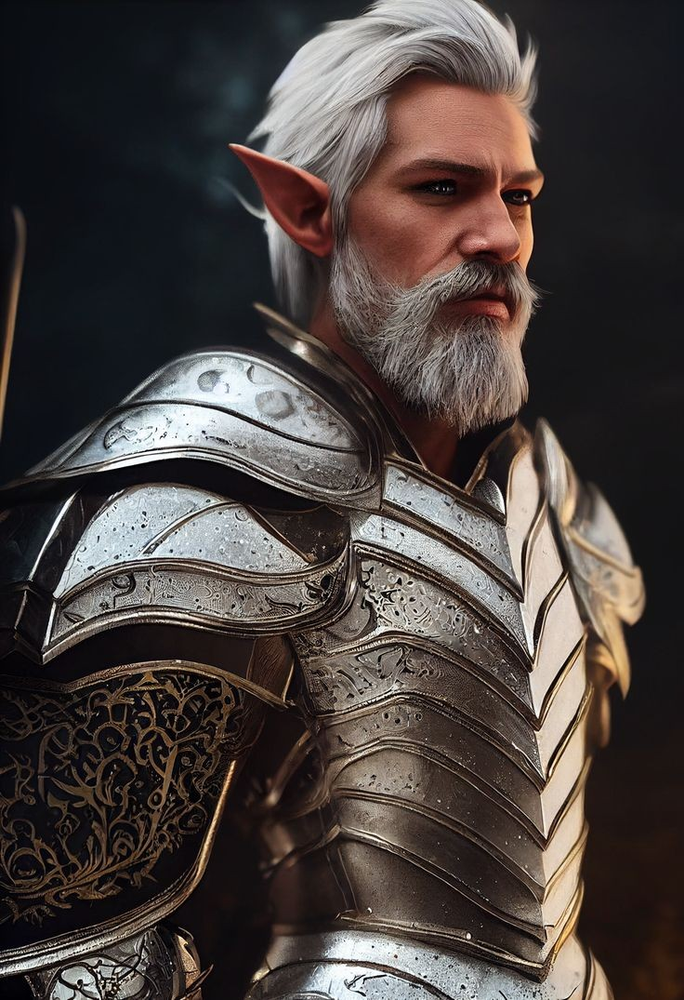

Force

Résistance
Dextérité

Magie

Ingénierie


Environnement : Terres d'Origine - Voguenielle
Durée de vie moyenne : 300 ans
Taille : M
Système politique : Royauté
Statut politique : -
Relations hostiles : Draconiens - Elfes lunaires - Humains
Alliés : Humains de l'Archipel
Croyance : Ysiiri
Force
Résistance
Dextérité
Magie
Ingénierie
Capacités innées : Sens surdéveloppés, facilité avec la magie
Facilités magiques : En tout points
Impossibilités : Magie noire ou occulte
Si les elfes vivent aujourd’hui dans les Terres-d’Origine, cela n’a pas toujours été le cas, jadis, ils étaient possesseur du Nouveau-Monde quasiment dans son entièreté. Les Hommes vinrent sur leur territoire et il suivit une guerre sanglante qui poussa le peuple sylvestre dans ses retranchements, jusqu’à finalement l’amener à l'exode. Aujourd’hui, les elfes sont divisés, notamment par la naissance des adeptes d’Astra et les mutations qui firent les draconiens. Or, ceux ayant conservé leurs anciennes traditions vivent dans des conditions très agréables et vénèrent Ysiiri, qui fit l’Yndrill et les forêts qui constituent leur empire.
Profil type : Sérieux - Confiant - Distingué - Assuré - Sage
Alimentation : Omnivore mais ne mangeant de la viande que si nécessaire
Montures : Félins de grande taille
Les elfes vivent naturellement dans les espaces boisés. Nous les reconnaissons par leurs oreilles pointues, leurs sens hyper développés et leur attrait naturel au savoir ainsi qu'aux arts magiques. Voguenielle, leur capitale, souligne allègrement leur nature profonde par son aspect nullement industrialisé et le plus proche de ce que l’arbre-monde offre dans son cadre brut.

Nombre d'OC de cette race sur Yndrill: -